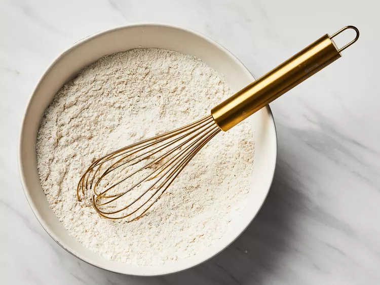
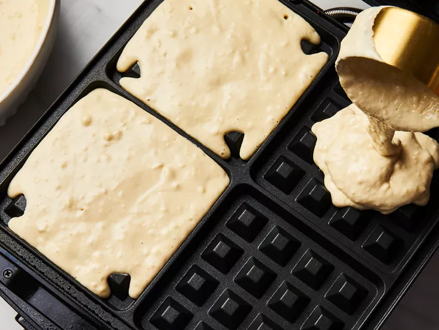

Gofres Clásicos

Descripción
Estos gofres quedan deliciosos y crujientes. ¡Perfectos para cualquier día de la semana!
Ingredientes
- 2 tazas de harina de trigo
- 1 cucharadita de sal o al gusto
- 4 cucharaditas de levadura en polvo
- 2 cucharadas de azúcar blanca
- 2 huevos grandes
- 1 + 1/2 tazas de leche tibia
- 1/3 taza de mantequilla derretida
- 1 cucharadita de extracto de vainilla
Instrucciones
-
Reúna todos los ingredientes.

-
En un bol grande, mezcla la harina, la sal, el polvo para hornear y el azúcar; reserva. Precalienta la waflera a la temperatura deseada.

-
Bate los huevos en un recipiente aparte; incorpora la leche, la mantequilla y la vainilla.

-
Vierta la mezcla de leche en la mezcla de harina; bata hasta que se integren bien.

-
Vierta la masa en una waflera precalentada.

-
Cocina los gofres hasta que estén dorados y crujientes.

-
¡Sírvelo inmediatamente y disfrútalo!